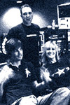
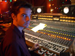
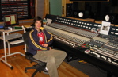

|
 3/17/06: I'm back in a Los Angeles studio with Moses Mayfield tracking 5 more songs for their upcoming release on Epic. We'll be at Henson Studios and The Mix Room with producer Ben Grosse.
2/20/06: I just finished recording and developing a "crunk-punk" sound for a Jacksonville-based band called Whole Wheat Bread. Dirrrty South represent! They Combine bombastic crunk bass with melodic punk choruses and timely lyrics on such songs as "Symbol of Hope."
12/20/05: I spent a few days in the studio with Mike Andrews engineering some of his work for the upcoming movie "The TV Set" starring Sigourney Weaver and David Ducovny. An interesting experience with a very creative guy.
10/8/05: Congrats to Fall Out Boy on getting the Grammy nomination for Best New Artist.
8/28/05: Congrats to Fall Out Boy on taking home an MTV video music award for their song "Sugar, We're Goin' Down."
7/11/05: I'll begin work on the Epic Records debut album for the band Moses Mayfield with producer Ben Grosse starting July 25th. The basic tracking will be done at Longview Farm Studios, where Jet just completed their new record. The second half of the project will be finished at Ben's studio, The Mix Room, in L.A.
5/9/05: Congrats to Fall Out Boy for a #9 debut on the Billboard charts with their new release "From Under a Cork Tree."
 5/2/05: I'll begin work on the new Yellowcard album back at Sunset Sound Studios in Hollywood. Congrats to guys for the platinum selling success on their debut album "Ocean Avenue."
4/21/05: I just finished producing/engineering/mixing 3 songs for a new band called Curious who blend the best of The Killers and Blondie with their own unique pop twist. Look for a full length to start production hopefully by summer's end.
3/21/05: SXSW 2005: Biirdie played 2 amazing sets at the festival landing them a deal to release the new EP with the addition of a few more songs to be recorded. Other bands that I saw and liked included Bloc Party, Phoenix, Saturday Looks Good to Me and Dogs Die in Hot Cars. Shows that I wish I saw include The Futureheads, M.I.A. and Kaiser Chiefs. But you just can't catch everything...
2/26/05: In more radio news, The Exies' song "Ugly" is #11 on the modern rock radio charts, and Biirdie is starting to get more spins around the country including L.A.'s 103.1 playing three of their songs in a row one night!
2/26/05: The debut album by Days Away called "Mapping an Invisible World" will be released by the Fueled by Ramen label on May 10th. For fans of experimental emo-punk music...
1/1/05: I've been asked by Larry Crane of TapeOp Magazine to moderate a panel on "Mixing in the Box" at this years TapeOp Conference. It'll be held in New Orleans June 10-12 and should be a total blast as well as interesting for the geeked out producer/engineer in all of us. For more information, check out www.tapeopcon.com.
12/16/04: Biirdie and I finished up some more sessions for a new EP to come out next year. It was great how the production and concept took on a life of its own after a little prodding from me and Jared. It turned into an all-out live session/acoustic band vibe, which is a great change from the more studio-oriented approach of the first album, Morning Kills the Dark. Check this one out in '05.
 11/20/04: Fall Out Boy is on deck at Ocean Studios doing their first major label album with producer Neal Avron and myself. After selling 100,000 copies of their last indie album, these guys are poised to do big things next year. For fans of the new pop-punk/emo sound. www.falloutboyrock.com
9/9/04: We've finished all the tracking for Monique DeBose's new album. She's got a great line-up of mixers for the project, and this record should be out soon. Her new website is at www.moniquedebose.com.
<<-- VIEW PAGE 1 | 2 |
3 -->>
|